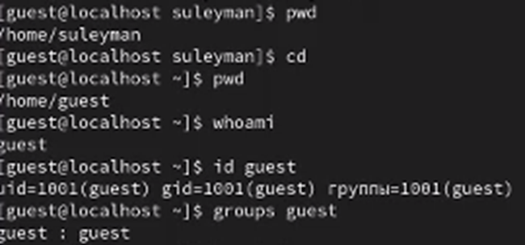
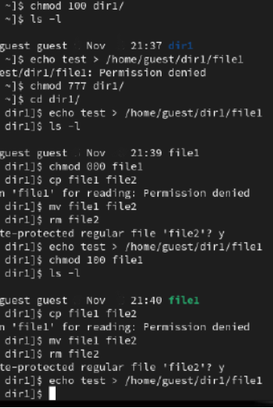

Получить практические навыки работы в консоли с атрибутами файлов, закрепить теоретические основы дискреционного разграничения доступа в современных системах с открытым кодом на базе ОС Linux.
Процесс выполнения лабораторной работы
Определяем UID и группу
Информация о пользователе guest
Файл с данными о пользователях
Сожержимое файла /etc/passwd
Доступ к домашним директориям
Расширенные атрибуты
Атрибуты директории
Снятие атрибутов с директории
Выводы по проделанной работе
Вывод
В ходе выполнения лабораторной работы были получены навыки работы с атрибутами файлов и сведения о разграничении доступа.